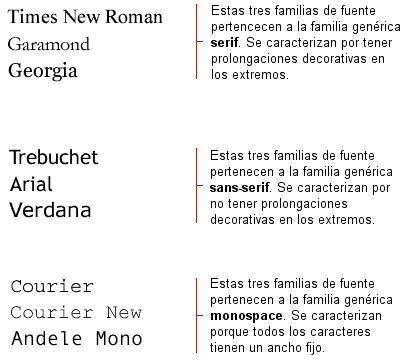
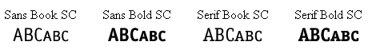
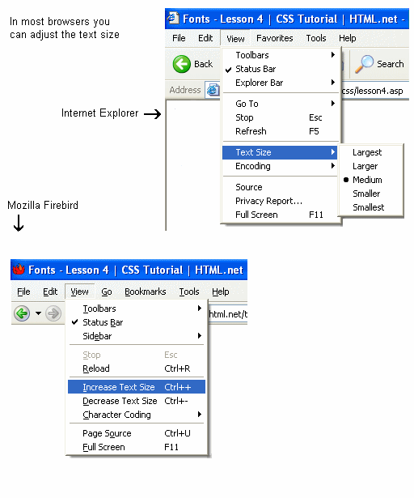

Lección 4: Fuentes
En esta lección aprenderás nociones sobre fuentes y cómo se aplican usando CSS. También veremos cómo solucionar el tema de que las fuentes específicas elegidas para un sitio web sólo se pueden ver si están instaladas en el PC desde el que se accede a dicho sitio web. Se describirán las siguientes propiedades CSS:
La propiedad font-family se usa para establecer una lista ordenada de fuentes que se usarán para mostrar un elemento determinado o una página web. Si la primera fuente de la lista no está instalada en el ordenador desde el que se accede al sitio, se seguirá probando con la siguiente fuente hasta encontrar una fuente apropiada.
Para clasificar las fuentes se usan dos tipos de nombres: nombres de una familia y familias genéricas. Estos dos términos se explican a continuación.
La diferencia se puede ilustrar así:

Al listar fuentes para el sitio web, por supuesto se empieza por la preferida, seguida ésta de algunas fuentes alternativas. Se recomienda completar la lista con una familia de fuentes genérica. Así, al menos, la página se mostrará usando una fuente de la misma familia si ninguna de las especificadas están disponibles.
Un ejemplo de lista de fuentes por orden de prioridad podría tener este aspecto:
h1 {font-family: arial, verdana, sans-serif;}
h2 {font-family: "Times New Roman", serif;}
Ver Ejemplo
Los encabezados marcados con la etiqueta <h1> se mostrarán usando la fuente "Arial". Si esta fuente no está instalada en el ordenador de usuario, se usará en su lugar la fuente "Verdana". Si ambas fuentes no están disponibles, se usará una fuente de la familia sans-serif para mostrar los encabezados.
Fíjate cómo el nombre de fuente "Times New Roman" contiene espacios y, por lo tanto, se lista usando comillas.
La propiedad font-style define la fuente elegida bien con el valor normal, el valor italic o el valor oblique. En el ejemplo que sigue, todos los encabezados marcados con <h2> aparecerán en cursiva.
h1 {font-family: arial, verdana, sans-serif;}
h2 {font-family: "Times New Roman", serif; font-style: italic;}
Ver Ejemplo
La propiedad font-variant se usa para elegir entre las variantes normal o small-caps (versalita) de una fuente. La fuente a la que se aplica el valorsmall-caps es una fuente que usa letras en mayúscula inicial más pequeñas, en vez de letras en minúscula. ¿Confuso? Veamos los ejemplos siguientes:

Si la propiedad font-variant se establece con el valor small-caps y no hay disponible una fuente en versalita, el navegador probablemente mostrará el texto en mayúscula.
h1 {font-variant: small-caps;}
h2 {font-variant: normal;}
Ver Ejemplo
La propiedad font-weight describe qué intensidad o "peso" en negrita debería tener la fuente. Toda fuente puede tener los valores normal o bold. Algunos navegadores soportan, incluso, el uso de números entre 100 y 900 (de cien en cien) para describir el peso de dicha fuente.
p {font-family: arial, verdana, sans-serif;}
td {font-family: arial, verdana, sans-serif; font-weight: bold;}
Ver Ejemplo
Tamaño de la fuente [font-size]
El tamaño de la fuente se establece por medio de la propiedad font-size.
A la hora de describir el tamaño de las fuentes, existen muchas unidades diferentes (por ejemplo, píxeles y porcentajes) entre las que elegir. En este tutorial nos centraremos en las unidades más comunes y adecuadas. Como ejemplo, podemos incluir:
h1 {font-size: 30px;}
h2 {font-size: 12pt;}
h3 {font-size: 120%;}
p {font-size: 1em;}
Ver Ejemplo
Existe una diferencia clave entre las cuatro unidades anteriores. Las unidades 'px' y 'pt' establecen el tamaño de la fuente de forma absoluta, mientras que '%' y 'em' permiten al usuario ajustar el tamaño de la misma según considere oportuno. Muchos usuarios son discapacitados, mayores o sufren de disminuación visual, o disponen de un monitor de mala calidad. Para que tu sitio web sea accesible para todo el mundo, deberías usar unidades ajustables como, por ejemplo, '%' o 'em'.
En la imagen que sigue puedes ver cómo ajustar el tamaño del texto en Mozilla Firefox e Internet Explorer. Pruébalo; es una buena característica, ¿no crees?
En la imagen que sigue puedes ver cómo ajustar el tamaño del texto en Mozilla Firefox e Internet Explorer. Pruébalo; es una buena característica, ¿no crees?

Combinación de propiedades [font]
Si usamos la propiedad abreviada font es posible incluir todas las propiedades diferentes relativas a fuentes en una única propiedad.
Por ejemplo, imagina estas cuatro líneas de código que usamos para describir las propiedades de fuente para la etiqueta <p>:
p {
font-style: italic;
font-weight: bold;
font-size: 30px;
font-family: arial, sans-serif;
}
Usando la propiedad abreviada, el código se puede simplicar así:
p {
font: italic bold 30px arial, sans-serif;
}
El orden de los valores para la propiedad font es:
font-style | font-variant | font-weight | font-size | font-family
Resumen
A lo largo de esta lección has aprendido ciertas nociones sobre algunas de las posibilidades relacionadas con las fuentes. Recuerda que una de las principales ventajas de CSS a la hora de especificar las fuentes, es que, en cualquier momento, puedes cambiar la fuente de un sitio web completo en solo unos minutos. CSS ahorra tiempo y te facilita la vida. En la lección siguiente examinaremos propiedades CSS relativas al texto
Leccion Anterior